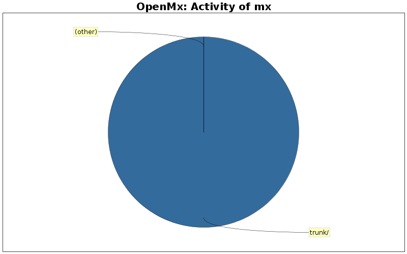

OpenMx Developers: mx
«
Development Statistics for OpenMx
«
Developers
Login name:
mx
Total Commits:
1 (0.0%)
Lines of Code:
2 (0.0%)
Most Recent Commit:
2007-12-07 14:49
Tweet this:
Activity by Clock Time
Activity in Directories
Directory
Changes
Lines of Code
Lines per Change
trunk/
1 (100.0%)
2 (100.0%)
2.0

Most Recent Commits
mx
2007-12-07 14:49
Rev.:
1
TRB: Initial import--three directories and READMEs.
2
lines of code changed in
1 file
:
trunk
: README
(new 2)
Generated by
StatSVN
0.5.0